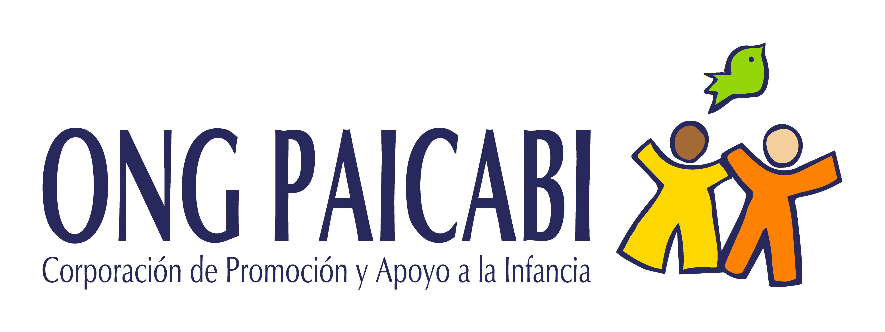

Psicólogo Especializado en Derechos Humanos
Especialista en Cultura de Paz y Educación
Pais: El Salvador
Licenciado en Psicología, con Maestría en Derechos Humanos y Educación para la Paz y Doctorado en Educación con Especialidad en Cultura de Paz. Posee una amplia experiencia en prevención, evaluación y abordaje de las conductas sexuales problemáticas y de las prácticas abusivas sexuales, lo que lo ha posicionado como un referente en el campo. Su trayectoria profesional se complementa con una vasta experiencia en el desarrollo de estrategias de abogacía e incidencia en políticas públicas a favor de la infancia y sus familias, así como en la docencia universitaria a nivel de maestrías, donde ha contribuido a la formación de nuevas generaciones de profesionales. Carlos Flores, funge como Coordinador del Diplomado Internacional en Evaluación, Prevención e Intervención en contextos de Prácticas Abusivas Sexuales de niñas, niños y adolescentes.
Sector público y sociedad civil
Docencia y consultorías
Incidencia política